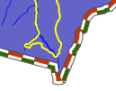

AGG Rendering Specifics¶
- Author:
Thomas Bonfort
- Contact:
thomas.bonfort at gmail
- Last Updated:
2008-11-24
Introduction¶
MapServer 5.0 released with a new rendering backend. This howto details the changes and new functionality that this adds to map creation. This howto assumes you already now the basics of mapfile syntax. If not, you should probably be reading the mapfile syntax.
Setting the OutputFormat¶
24 bit png (high quality, large file size):
OUTPUTFORMAT
NAME 'AGG'
DRIVER AGG/PNG
IMAGEMODE RGB
END
24 bit png, transparent background:
OUTPUTFORMAT
NAME 'AGGA'
DRIVER AGG/PNG
IMAGEMODE RGBA
END
24 bit jpeg (jpeg compression artifacts may appear, but smaller file size):
OUTPUTFORMAT
NAME 'AGG_JPEG'
DRIVER AGG/JPEG
IMAGEMODE RGB
END
png output, with number of colors reduced with quantization.
OUTPUTFORMAT
NAME 'AGG_Q'
DRIVER AGG/PNG
IMAGEMODE RGB
FORMATOPTION "QUANTIZE_FORCE=ON"
FORMATOPTION "QUANTIZE_DITHER=OFF"
FORMATOPTION "QUANTIZE_COLORS=256"
END
New Features¶
All rendering is now done antialiased by default. All ANTIALIAS keywords are now ignored, as well as TRANSPARENCY ALPHA. Pixmaps and fonts are now all drawn respecting the image’s internal alpha channel (unless a backgroundcolor is specified).
As with GD in ver. 4.10, using a SYMBOL of type ELLIPSE to draw thick lines isn’t mandatory anymore. To draw a thick line just use:
STYLE
WIDTH 5
COLOR 0 0 255
END
A line symbolizer has been added, that works with vector or pixmap symbols, to draw textured lines. This happens by default if a line’s style is given a symbol of type vector or pixmap. To enable “shield” symbolization, i.e. a marker placed only on some points of the line, you must add a GAP parameter to your symbol definition. This GAP value is scaled w.r.t the style’s SIZE parameter. Specify a positive gap value for symbols always facing north (optionally rotated by the ANGLE of the current style), or a negative value for symbols that should follow the line orientation

This happens by default if a line’s style is given a symbol of type vector or pixmap. To enable “shield” symbolization, i.e. a marker placed only on some points of the line, you must add a GAP parameter to your symbol definition. This GAP value is scaled w.r.t the style’s SIZE parameter - specify a positive gap value for symbols always facing north (optionally rotated by the ANGLE of the current style), or a negative value for symbols that should follow the line orientation
Pixmap and font symbols can now be rotated without losing their transparency
For POLYGON layers with no specific SYMBOL, the WIDTH keyword specifies the width of the outline, if an OUTLINECOLOR was specified. This is a shorthand that avoids having to create multiple styles for basic rendering, and will provide a marginal performance gain. Note that in this case, the width of the outline is /not/ scale dependent.
Modified Behavior¶
When specifying a SYMBOL for a polygon shape, the GAP parameter of the symbol is used as a separation between each rendered symbol. This works for symbols of type vector, pixmap and ellipse. For example a symbol defined by
SYMBOL
NAME 'triangle'
TYPE VECTOR
FILLED TRUE
POINTS
0 1
.5 0
1 1
0 1
END
GAP 1
END
that is rendered in a class where SIZE is 15 will be rendered like
layers of type CIRCLE support hatch type symbol filling
the ENCODING keyword for labels is now enforced. If unset, MapServer will treat your label text byte-by-byte (resulting in corrupt special characters).